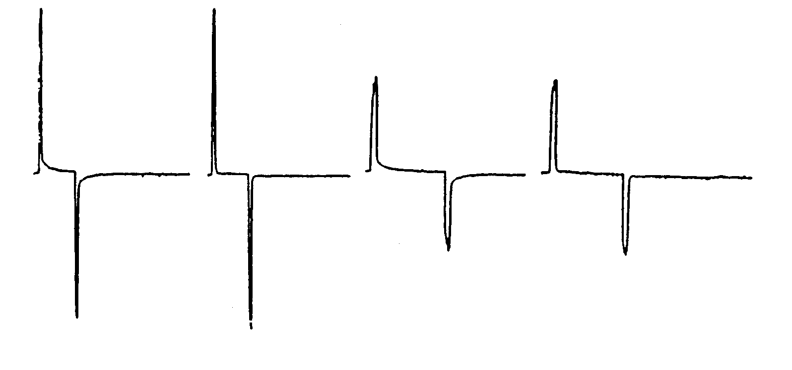

Bore tube conversion on an old Oxford horizontal magnet.
Dear Professor Shapiro,
We have a 1.9 T Oxford 30 cm diameter horizontal bore superconducting magnet (Model B26694) which has been in continuous use for 4.5 years. Recently, an Oxford engineer performed several operations which have significantly improved the magnet. I describe these operations and results so that they may benefit others with the same magnet.
One of the problems we have had is the eddy current which alters the switched magnetic field gradients. We had tried several cures which offered partial solutions (smaller gradient coils, reshaping the driving pulse according to the difference between the actual gradient time dependence and the driving pulse, etc.) which led us to the conclusion that we should combine as many solutions as possible for the best results. Therefore, we ordered a conversion from the old aluminum bore-tube to a fiberglass one.
This conversion has made a significant difference in the performance (or shall we say, correctability) of the switched gradients, especially the rapidly changing components. The before/after figures below show the time-derivative of the field in the magnet for 5 and 10 ms z-gradient pulses from a Nalorac shim/gradient coil with an inside diameter of 25 cm and a switched gradient of 1.5 gauss/cm.
Another problem we had after 3.5 years was a small leak in the vacuum jacket which caused us to pump the vacuum jacket once a month. The engineer replaced all the o-rings on the magnet and installed a charcoal sorb in the vacuum space. We also discovered that there was no insulation in the vacuum space between a hatch (intended for a refrigerator) and the nitrogen can. This hatch exists only on old Oxford magnets and is a plate 14.4 cm in diameter bolted to a flange on the top center of the magnet. Sixteen sheets of aluminized mylar were cut to size and stuffed into the hole under this plate. The liquid nitrogen consumption has been reduced by about 1/3 and we now refill (from a 160 liter dewar) every ten days instead of the one week refill interval we used before. The liquid helium consumption has also diminished and we now go six weeks between ordering compared with the previous four. (We fill the dewar and then use up the remainder of the 100 liters to top-up one week later.)
An welcome bonus was that the Oxford engineer shimmed the superconducting shims better than we used to be able to shim the room temperature shims with a large (4.5 cm dia. x 9 cm long) sample. The improved shim (ca. 1/8 ppm on the 4.5 cm dia. cylindrical phantom of water which is 4 or 5 times better than before!) has allowed us to do many experiments more easily compared to the past.
We now have an extra bell-housing which was (is) attached to the old bore tube that we will sell (cheap) to anyone who needs it. Oxford does not stock this item so that you would normally have to pay Oxford to make you one for the bore tube conversion (unless you are willing to have your magnet down for several weeks while Oxford attaches the old housing to the new bore tube at Oxford) and then end up with your old, useless one (like we did).

Best wishes,
Eiichi Fukushima, Paul D. Majors